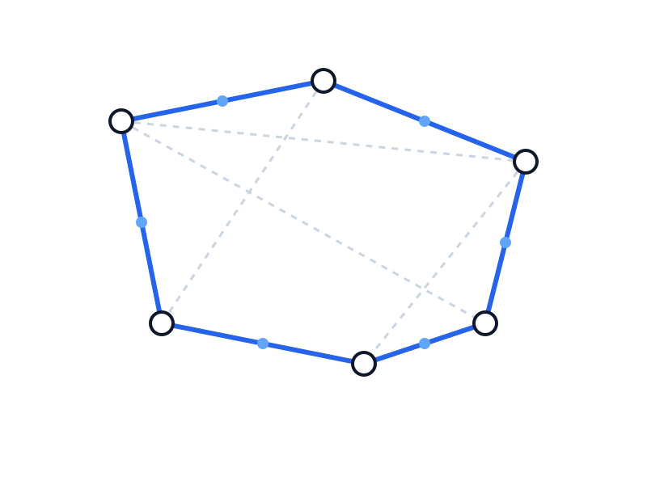

Аналіз алгоритмів
Проведення порівняльного аналізу існуючих метаевристичних методів оптимізації.
Дослідження ефективності застосування ройового інтелекту для вирішення NP-складних оптимізаційних задач на графах.

Задача комівояжера (TSP) є класичною проблемою комбінаторної оптимізації. У сучасному світі логістики побудова оптимальних маршрутів дозволяє значно економити ресурси. Алгоритм IWD, натхненний природним процесом розмивання ґрунту водою, пропонує ефективний підхід до пошуку рішень у складних графах.
Розробка та аналіз програмної моделі інтелектуального алгоритму "Розумних крапель води" для знаходження субоптимальних маршрутів у задачах на графах великої розмірності.
Проведення порівняльного аналізу існуючих метаевристичних методів оптимізації.
Математичний опис процесу зміни кількості ґрунту та швидкості крапель води на ребрах графа.
Програмне втілення алгоритму на мові високого рівня з використанням ООП парадигм.
Експериментальне підтвердження ефективності на стандартних тестах TSPLIB.
Отримання програмного комплексу, що дозволяє вирішувати задачу комівояжера з похибкою не більше 2% від глобального оптимуму для середніх розмірностей графів. Порівняння результатів з мурашиним алгоритмом (ACO) для доведення конкурентоспроможності методу IWD.